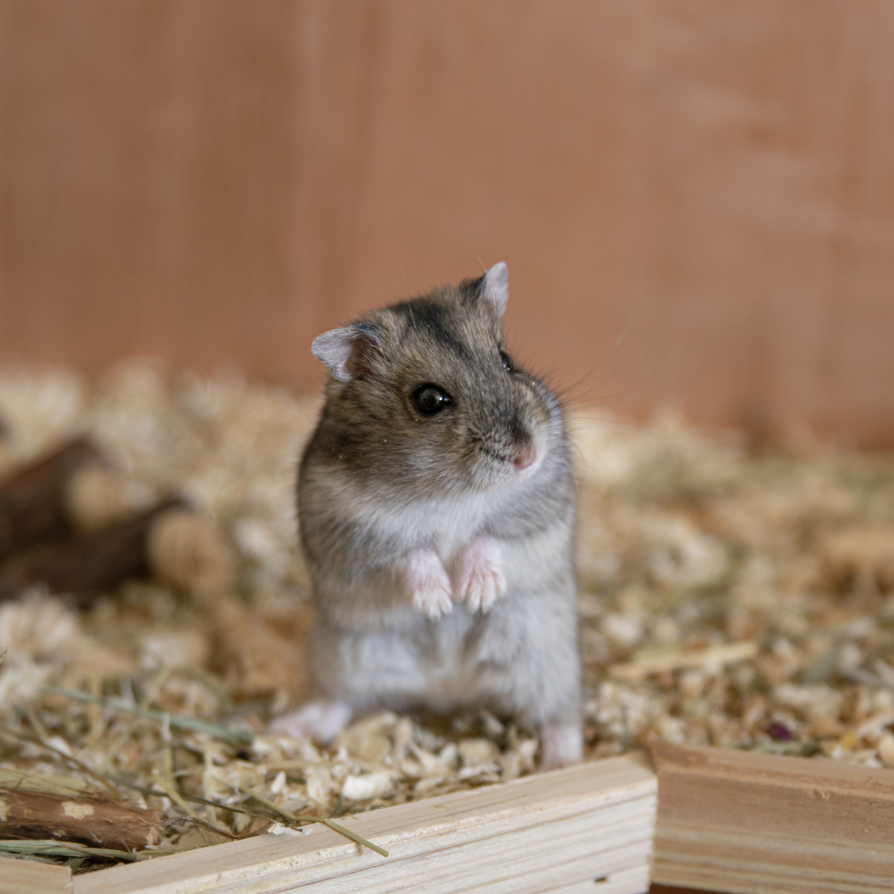

햄스터

햄스터란 주로 반려동물로 기르는 설치목 비단털쥐과 비단털쥐아과에 속한 포유류이다.
한국에서는 1990년대에 들어서부터 반려동물로 널리 사육되기 시작했다. 햄스터는 대체로 독립적인 생활을 하기 때문에 사람과의 정을 느낄 수 없다.
하지만 보통 핸들링을 통해 햄스터와 친해졌다고 하는데, 핸들링은 대개로 간식을 주면서 하므로 햄스터가 간식을 주는 손을 친근하고 익숙하게 느끼는 것이지 사람과 친해진다는 것은 아니다.
독립적인 생물인 만큼 햄스터를 키울 때 무턱대고 만져서는 절대 안 된다. 그렇게 하다 햄스터가 스트레스를 받아 수명에 지장이 생길수도 있다.
지능은 매우 낮은 편이지만 도주를 잘 하기 때문에 넓고 큰 케이지에 길러야 한다. 사육장에 뭔가 허점이 보이면 잽싸게 탈출하는 것을 보면 지능이 탈출에만 집중되어 있다는 우스갯소리도 있다.
물 따르는 소리, 걷는 소리도 들을만큼 청력도 밝다.